[박소연 3시간 몰아보기] 죽어도 잃지 않는 천재들의 투자공식 (신영증권 박소연 이사)
🎙️ 자막 대신 영상 음성을 받아써서 정리 (ko (음성 받아쓰기·GPU))
▶ 원본 영상 보기한눈에 보기
- 시장은 애널리스트도 맞히기 어렵습니다. 그래서 예측에 매달리기보다 무슨 일이 생겨도 무너지지 않는 구조와 규칙을 먼저 만들라는 게 영상의 핵심 주장입니다.
- 켈리 공식은 승률이 60%여도 재산의 20%만 걸라고 합니다. 에드워드 소프는 그 절반(하프 켈리)만 걸고 현금을 남겨 1987년 블랙먼데이에서 살아남았습니다.
- 섀넌의 도깨비, 곧 현금 50%를 두고 정해진 규칙대로 리밸런싱하는 방법은 오르내리기만 하는 시장에서도 복리로 자산을 불립니다. 같은 시장에서 레버리지는 거꾸로 자산을 녹입니다.
- 철도채 버블, 전시 YCC, 볼커의 금리 인상, LTCM 파산은 모두 금리가 만든 사건입니다. 금리가 내릴 때 성공만 겪은 천재들은 레버리지 때문에 무너졌습니다.
- 사마천은 「화식열전」에서 부를 사람의 본성으로 봤습니다. 부자가 되는 길로는 '몸 → 지혜 → 때'의 3단계, 역발상, 남들이 가지 않는 길, 자기 재능을 꼽았습니다.
이런 분께 도움이 됩니다
- 한 번에 크게 걸었다가 손실을 본 뒤 투자 원칙을 다시 세우고 싶은 개인 투자자.
- 금리 사이클이 시장을 어떻게 움직여 왔는지 이야기로 이해하고 싶은 분.
- '부자가 되는 길'을 고전에서 찾아보고 싶은 40~50대.
핵심 내용
결론: 예측보다 '무너지지 않는 구조'
- 25년 차 증권맨인 박소연 이사도 시장을 맞히지 못했습니다. 2007년 9월에 규정 때문에 어쩔 수 없이 자사주를 35,500원에 팔았는데, 그때가 거의 고점이었습니다. (3:26)
- 우리가 할 수 있는 최선은 어떤 일이 벌어져도 무너지지 않는 구조·시스템·원칙을 설계하는 것입니다. (4:20)
- 핵심 원칙은 현금(시장에 다시 들어갈 입장권)을 남기고, 걸 금액을 조절하고, 감정에 흔들리지 않는 규칙을 두는 것입니다.
💡 많이 버는 것보다 죽지 않는 것이 먼저다 — 복리는 살아남은 사람에게만 작동한다.
켈리 공식: 얼마를 걸 것인가
- 섀넌과 소프는 룰렛의 공이 어디에 떨어질지 예측하는 모델을 만든 뒤 '그럼 얼마를 걸어야 하나'라는 문제를 던졌습니다. 벨 연구소의 존 켈리가 여기에 답한 것이 켈리 공식입니다.
- 소프는 블랙잭 카드 카운팅 이론을 『Beat the Dealer』로 냈고, 그 뒤 라스베이거스 카지노의 규칙이 바뀌었습니다.
- 두 사람은 섀넌 집 지하실에서 8개월 동안 룰렛 예측 장치를 만들었습니다. 구두 속 스위치를 엄지발가락으로 눌러 바퀴 속도를 재는 방식이었고, 실제 카지노에서 3일쯤 써 보고 철수했습니다. 이 장치는 MIT에 전시돼 있다고 합니다.
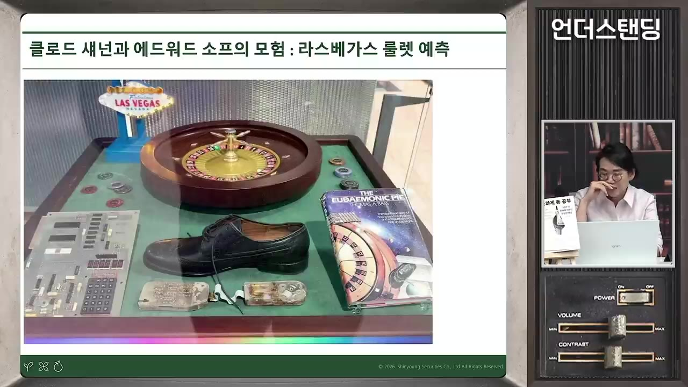
- 걸고 이기면 건 만큼 받는 1:1 게임이라면 걸 비율 = 이길 확률 − 질 확률입니다. (24:50)
| 이길 확률 | 켈리 비율 | 하프 켈리 |
|---|---|---|
| 60% | 20% | 10% |
| 80% | 60% | 30% |
| 50% 이하 | 걸지 않음 | 걸지 않음 |
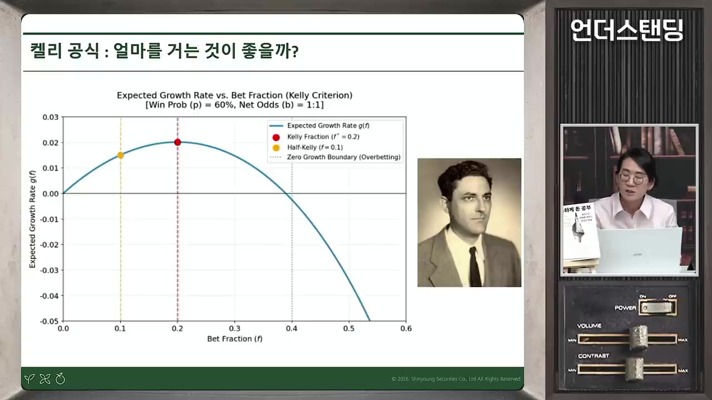
- 60% 승률에서 40%를 넘게 걸면 기대 성장률이 마이너스로 돌아섭니다. 이를 '파산의 수학'이라고 합니다. 재산이 아무리 많아도 마지막에 0을 한 번 곱하면 0이 되고, 그 0을 곱하게 만드는 것이 올인입니다.
- 소프는 계산이 안 되는 주식시장에서는 켈리 비율의 절반만 걸었습니다. 1987년 블랙먼데이 때 하루에 약 23% 폭락하며 대부분의 운용사가 무너졌지만 그는 살아남았습니다. (29:48)
- 조금이라도 우위가 없으면 아예 걸지 않습니다. 반반 확률이어도 걸지 않습니다.
- '불확실한 100%'보다 '확실한 10%를 열 번'이 낫다고 강조합니다.
섀넌의 도깨비: 현금 50%와 기계적 리밸런싱
- 섀넌이 MIT에서 단 한 번 한 주식 강의에서 소개했다는 이론입니다. 50% 떨어졌다가 100% 오르기를 되풀이해 제자리걸음하는 자산으로도 돈을 벌 수 있다는 내용입니다. (40:20)
- 반반 나누기
- 오르면 일부 팔기
- 내리면 일부 사기
- 기계적으로 반복
- 1반반 나누기
100만 원 중 50만 원은 현금, 50만 원은 주식
- 2오르면 일부 팔기
주식이 2배가 되면 합계 150만 원이 되므로 다시 75:75로 맞춥니다(주식 25만 원 매도)
- 3내리면 일부 사기
주식 75만 원이 반토막 나 37.5만 원이 되면 현금과 합친 112.5만 원을 다시 반반으로 맞춥니다
- 4기계적으로 반복
정해진 규칙대로만 되풀이하면, 박스권 시장에서도 자산이 복리로 우상향합니다
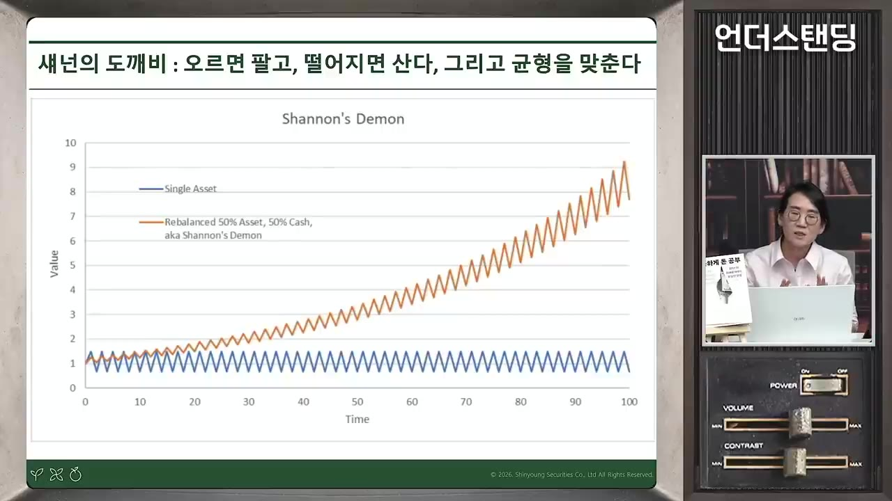
- 섀넌은 당시 매매 비용 때문에 실제로는 쓰기 어렵다고 했습니다. 박 이사는 수수료가 거의 없는 지금은 해 볼 만하다고 봅니다. (42:30)
- 상승장 시뮬레이션(매달 1% 상승, 월말 리밸런싱)에서는 바이앤홀드가 26.8%, 주식·현금 50:50 보유가 13.4%였고, 50:50 리밸런싱은 50:50 보유와 거의 같았습니다. 상승장이라고 확신할 수 있다면 바이앤홀드가 맞습니다.
- 다만 상승장을 얼마나 확신할 수 있는지가 문제입니다. 현금 보유는 '내가 틀릴 수 있다'는 겸손의 표시라고 말합니다.
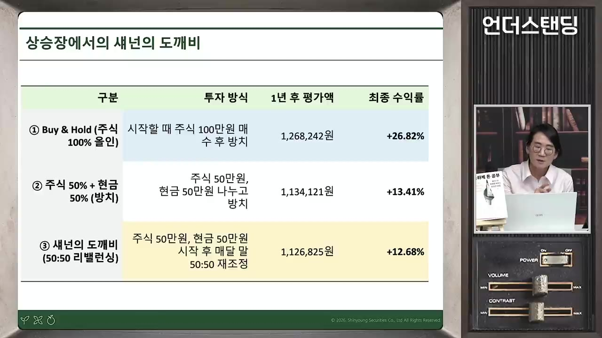
- 진행자가 제안한 '현금 25 : 주식 75'에 대해 박 이사는 "검증되지 않았다"고 답했습니다.
- 시장 상황에 따라 규칙을 바꾸면 결국 시장에 휘둘리는 것과 같습니다. 정기적으로 사 모으는 적립식 매수도 감정을 통제하는 좋은 기계적 규칙입니다.
레버리지와 변동성 드래그
- 20% 떨어지고 25% 오르기를 되풀이하는 횡보장에서 일반 투자는 원금을 계속 회복합니다. 2배 레버리지는 40% 떨어지고 50% 오르는 셈이라 원금을 회복하지 못하고 계속 깎입니다. (44:37)
- 100 → 60 → 90 → 54 … 이것을 변동성 드래그(volatility drag)라고 합니다.
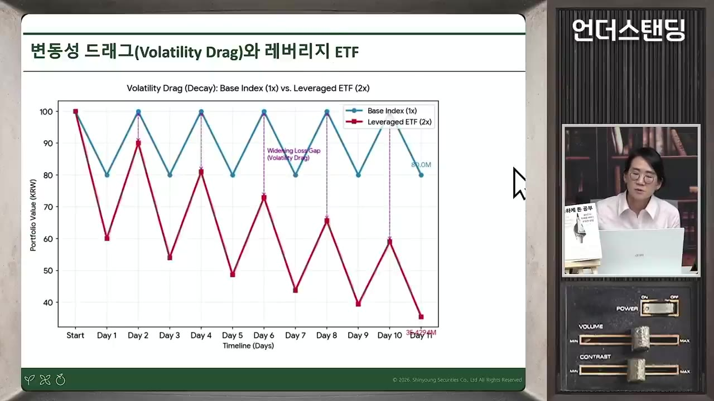
- 옵션의 감마: 숏감마 포지션은 오르면 더 사고 내리면 더 팔게 만듭니다. 최근 레버리지 ETF의 급등락이 이 현상과 관련이 있다고 설명합니다.
💡 레버리지는 횡보장에서 '아래로 가는 도깨비'가 된다.
천재들의 몰락: 존 메리웨더와 LTCM
- 살로먼 브라더스 시절 메리웨더는 회장 굿프렌드가 '라이어스 포커' 한 판에 100만 달러를 걸자고 하자 1000만 달러로 판을 키워 회장을 물러나게 했습니다. 1985년 무렵 일이고, 지금 가치로 약 40억 원이라고 합니다. (1:44:42)
- 라이어스 포커는 달러 지폐 일련번호 8자리로 하는 허세 게임입니다. 4명이면 숫자가 32개입니다.
- 굿프렌드는 트레이더에게 가장 중요한 능력이 수학보다 상대 심리를 읽는 것이라고 봤습니다.
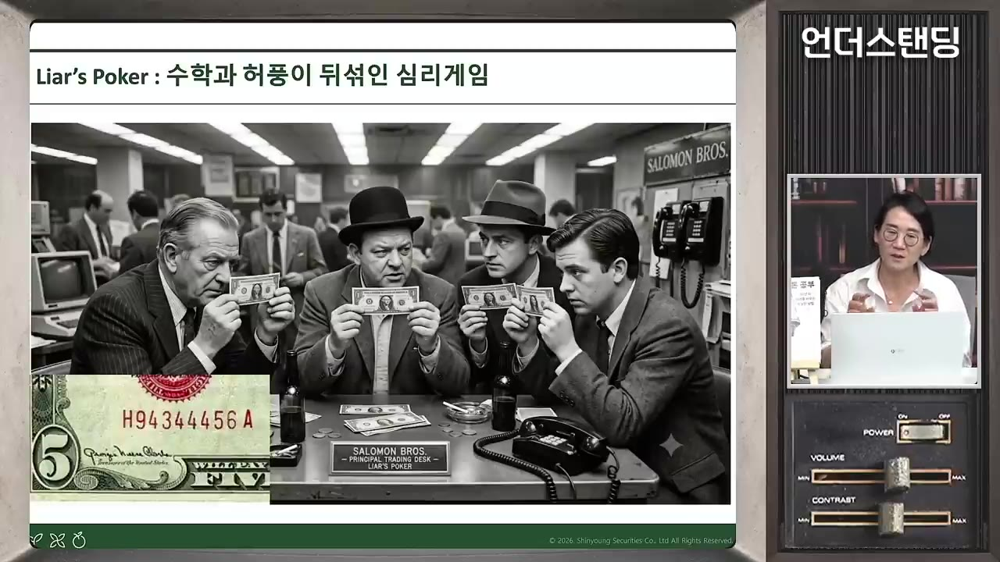
- LTCM(롱텀캐피털매니지먼트)은 노벨상 수상자 숄즈·머튼과 함께 세운 회사입니다. 러시아 국채를 사고 미국 국채를 파는 차익거래에 레버리지를 25~30배 썼다가 1998년 러시아 모라토리엄(채무 지급 유예)으로 한 달 만에 청산됐습니다. (1:53:46)
- 수습 과정에서 연준이 9·10·11월 세 차례 금리를 내렸고, 이것이 IT 버블로 이어졌다는 시각이 있습니다.
- 메리웨더의 홍보 문구는 "공짜 점심은 없다, 하지만 아주 싼 점심은 있다"였습니다.
- 메리웨더는 "모라토리엄만 아니었으면" 하며 JWM 파트너스를 다시 세웠습니다. 레버리지를 10~15배로 줄였지만 2008년 MBS 사태로 44% 손실을 보고 다시 청산했습니다.
- 그의 오른팔 빅터 하가니는 『The Missing Billionaires』에서 1900년대 이후 부자 대부분이 사라진 이유를 베팅 크기 조절(사이징) 실패로 결론 내렸습니다. 이후 Elm Partners를 세워 저비용 인덱스 ETF로 자산배분을 합니다. 손실이 난 해는 금리가 오른 2018년과 2022년이었습니다. (1:58:46)
💡 금리 하락기의 성공은 실력이 아니라 시대였을 수 있다 — "천재는 당신이 아니라 강세장이다."
금리가 시장 사이클을 만든다
- 철도채 버블
- 전시 금리 통제
- 전후 인플레
- 펀치볼 치우기
- 70년대 인플레
- 볼커의 인상
- 채권 대강세장
- 레버리지 붕괴
- 1철도채 버블
1830~1870년 정부가 최저수익 4%를 보증하자 수익성 없는 철도까지 깔렸고, 1873년 금리 인상으로 버블이 터졌습니다(1929년 이전 최대 공황) (1:12:52)
- 2전시 금리 통제
2차 세계대전 때 연준이 3개월 국채 0.375%, 장기 국채 2.5%로 금리를 묶고(YCC) 단기채 발행액의 80%를 사들였습니다
- 3전후 인플레
억눌린 금리가 풀리며 1946~48년 물가가 18~20% 올랐습니다
- 4펀치볼 치우기
1965년 존슨 대통령이 쉬는 사이 마틴 의장이 금리를 0.5%p 올렸고, 1966년 다우지수는 9개월 만에 25% 폭락했습니다. 마틴은 3년 뒤 결국 금리를 내렸습니다
- 570년대 인플레
아서 번즈 의장이 닉슨의 압박에 금리를 내렸고, 오일쇼크까지 겹쳤습니다
- 6볼커의 인상
기준금리를 21%까지 올려 인플레를 잡았습니다. 농민이 트랙터 시위를 했고, 볼커는 총을 지니고 다녔다고 합니다 (1:31:36)
- 7채권 대강세장
1980년대 이후 금리가 길게 내려가며 살로먼 브라더스와 스타 펀드매니저들이 탄생했습니다. 한국의 3저 호황도 이 흐름의 결과로 봅니다
- 8레버리지 붕괴
1998년 LTCM, 2008년 MBS(루이스 라니에리가 만든 주택담보대출 증권)발 금융위기
- 전쟁채권 포스터 "Buy Bonds Every Payday"는 애국심에 호소해 낮은 금리로 돈을 모은 사례입니다.
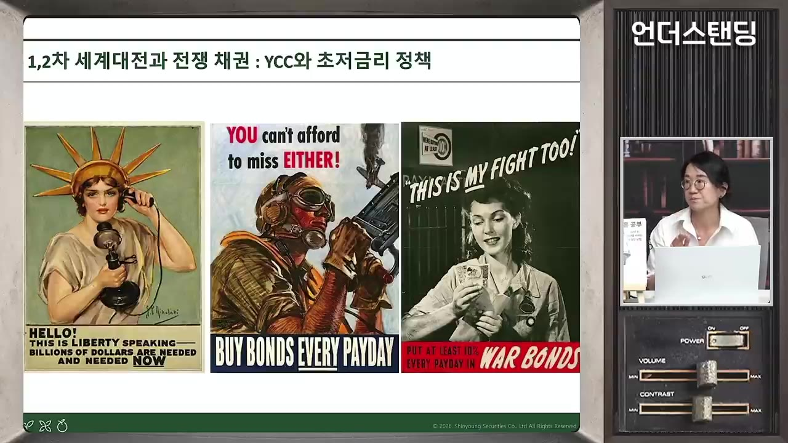
- 월가 속설: 기준금리는 연준 의장 키를 따라간다. 볼커 200cm → 그린스펀 약 180cm → 버냉키 173cm → 옐런 152cm로 키가 줄면서 금리도 내렸다는 농담입니다.
- 박 이사는 영상 시점에 한국과 일본만 금리 인상 사이클에 들어섰다고 봤습니다. 7월 한국은행 인상이 변동성에 어느 정도 영향을 줬다고 봅니다.
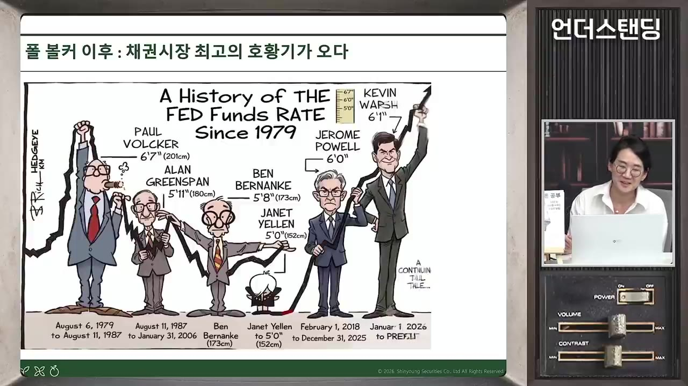
시대정신: 지나고 나서야 보인다
- 헤겔은 "미네르바의 부엉이는 황혼이 저물어야 날개를 편다"고 했습니다. 사건의 의미는 지나고 나서야 알게 된다는 뜻입니다. (1:01:24)
- 헤겔은 예나에서 나폴레옹을 보고 "말을 탄 세계정신을 보았다"고 썼습니다. 이듬해 프로이센은 농노제를 폐지했고, 풀려난 농노가 도시로 몰리며 산업화와 철도 수요가 폭발했습니다.
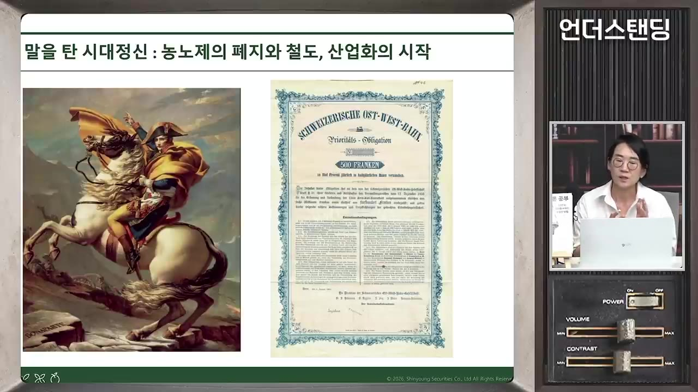
- 교훈: 내 실력과 시대의 흐름을 구분해서 볼 것. 미리 고민하면 '저녁'이 아니라 '점심때쯤'은 알 수 있다.
시세·감정에서 거리 두기
- 전업 투자 10년 차인 한 선배는 블룸버그(연 약 3천만 원)를 쓰지 않습니다. 낡은 PC 한 대로 하루 한 번 네이버에서만 시세를 보고 산책을 많이 합니다. 시세를 자주 보면 생각을 못 하게 된다는 이유입니다. (54:50)
- "사고 싶을 때 참고, 팔고 싶을 때 참는다."
- 시세판의 빨간 봉, 파란 봉은 본능을 맡은 변연계를 자극하고, 논리를 맡은 전두엽은 밀려납니다.
- 나심 탈레브는 일간 뉴스 대신 주간지만 보고, 찰리 멍거는 뉴스가 최신 편향을 만든다고 경계했습니다.
- 손절 원칙을 세워 두고도 막상 떨어지면 지키지 못하는 게 보통입니다. 규칙이 있어야 남들처럼 휩쓸리지 않습니다.
잘 아는 분야에 장기 투자: 섀넌의 포트폴리오
- 섀넌은 세 종목으로 큰돈을 벌었습니다. MIT 친구 헨리 싱글턴이 세운 텔레다인(약 50년 보유), 휴렛패커드, 모토로라입니다. (36:42)
- "내가 똑똑할 필요는 없다. 누가 똑똑한지 알아보는 눈만 있으면 된다."
- 화장품 업계 직장인은 화장품을, 전자 업계 직장인은 반도체를 잘 압니다. 유행을 좇기보다 자기가 잘 아는 분야에 투자하라는 말입니다.
- 이 원칙을 시작하기 가장 좋은 때는 40대입니다. 무엇이 되고 안 되는지 알기 시작했고, 복리를 쌓을 시간도 남아 있기 때문입니다. 50대도 늦지 않다고 합니다.
사마천과 「화식열전」: 부는 사람의 본성
- 『사기』 130권은 본기 12, 표 10, 서 8, 세가 30, 열전 70권으로 이뤄져 있습니다. 연도순 편년체가 아닌 주제·인물 중심의 기전체를 세웠고, 평민 부자까지 기록했습니다. 129권이 돈 이야기만 모은 「화식열전」(재화를 불리는 이야기)이고, 130권은 자서전입니다.
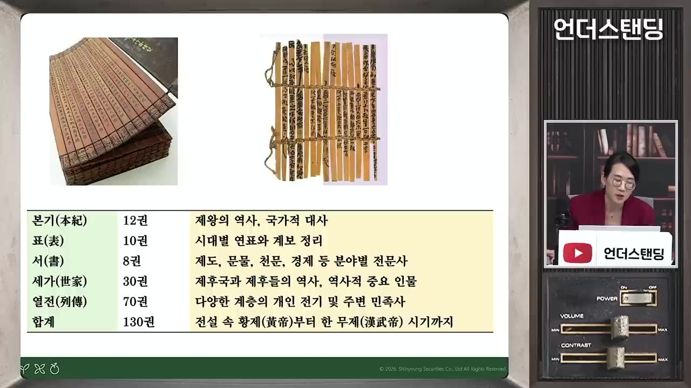
- 사마천은 흉노에 사로잡힌 장군 이릉을 변호했다가 사형을 선고받았습니다. 살 길은 1년치 군대 운영비를 내거나 궁형을 받는 것뿐이었고, 돈이 없어 궁형을 받았습니다. 그래서 돈의 중요성을 정면으로 썼을 것이라고 박 이사는 해석합니다. (2:23:01)
- "천금을 가진 집 자식은 저잣거리에서 죽지 않는다. 빈말이 아니다."
- 한 무제 비판이 담긴 책을 숨겨 두고 후손에게 사후 공개를 당부했다고 합니다. 후손이 성을 동(同)·풍(馮)으로 바꿨다는 전승도 소개합니다.
- 핵심 구절: "부(富)는 사람의 본성이며 배우지 않아도 모두 바라는 것이다." 애덤 스미스보다 약 1800년 앞선 말입니다.
- 사람은 자기보다 10배 부자면 헐뜯고, 100배면 두려워하고, 1000배면 심부름을 하고, 10000배면 하인이 된다. 사마천은 이것이 만물의 이치라고 했습니다. (2:29:49)
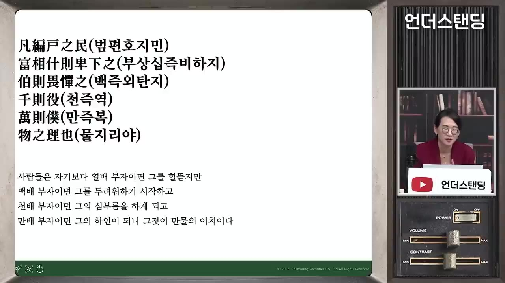
- "곳간이 차야 예절을 알고, 입고 먹을 것이 넉넉해야 영예와 치욕을 안다." 박 이사는 이를 '먹고사니즘'이라 부릅니다. 가난을 미화하는 안빈낙도를 사마천은 거부했습니다.
부의 3단계
- 무재작력
- 소유투지
- 기요쟁시
- 1무재작력
재산이 없으면 몸으로 일해 종잣돈을 만듭니다. 취업·저축의 단계로, 20대~30대 초반
- 2소유투지
재산이 조금 생기면 지혜를 겨룹니다. 주식·부동산·사업으로 위험을 감수하는 단계로, 30~40대
- 3기요쟁시
넉넉해지면 '때'를 다툽니다. 아닐 때는 물러나 있다가 시대의 큰 기회가 오면 압도적으로 겁니다 (2:38:09)
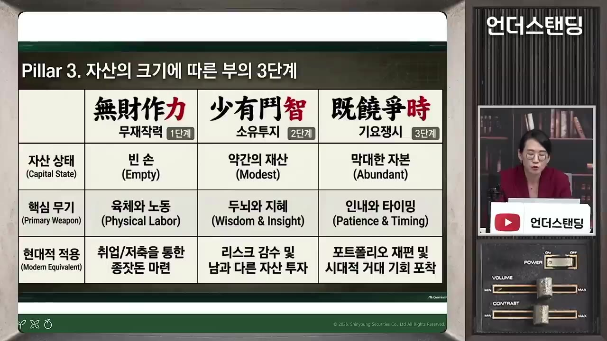
- 박 이사는 마지막 단계인 '때를 보는 것'을 가장 중요하게 봅니다. 큰 부를 이룬 사람은 대부분 시대의 흐름에 걸어 성공했다고 합니다.
남들이 가지 않는 길과 자기 재능
- 탁씨는 조나라가 망해 강제 이주될 때 다들 뇌물을 써서 가까운 곳에 남으려 할 때 일부러 먼 곳으로 가서 철광을 찾아 거부가 됐습니다. 가려던 곳은 자막에 '총나라'로 나오지만 불분명합니다. (2:40:34)
- 박 이사가 가르친 학생은 수능을 망친 뒤 경쟁률 1:1인 이란어과에 들어갔습니다. 이후 통역 아르바이트(시간당 50만 원)를 하다가 외국계 은행에 특채로 들어갔습니다.
- "절약하고 부지런히 일하는 것이 생업의 바른 길이지만, 부자는 반드시 기이하고 독특한 방법으로 이긴다(부자필용기승)."
- 화식열전 속 부자 사례(부에는 정해진 업종이 없다):
| 인물 | 방법 |
|---|---|
| 진양 | 농사 |
| 전숙 | 도굴 |
| 환발 | 도박 |
| 옹낙성 | 행상 |
| 옹백 | 기름 장사 |
| 장씨 | 음료 판매(천만 전을 모음) |
| 질씨 | 칼 갈기 |
| 탁씨 | 양 위장을 말린 음식 |
| 장리 | 말 치료 |
- "사람은 각자 능력대로 힘을 다하고, 자기 일을 즐기면 물이 아래로 흐르듯 스스로 힘쓴다. 재능 있는 사람에게는 재물이 모이고, 못난 사람에게서는 기왓장 깨지듯 흩어진다." 박 이사는 '못난 사람'을 재능 없는 분야에서 일하는 사람으로 풀이합니다.
💡 부자가 되는 첫 단계는 나를 아는 것 — 잘하고 좋아하는 일에서 승부를 보라.
역발상과 위기에 거는 판단
- 범려는 와신상담으로 월나라 왕의 복수를 도운 신하입니다. 토사구팽을 피해 떠나 '소봉'(벼슬 없이 제후처럼 사는 부자)이 됐습니다. (2:52:53)
- "가뭄이 들면 배를 사고, 홍수가 나면 수레를 사라."
- "비싸지면 거름처럼 내다 팔고, 싸지면 구슬처럼 사들여라." 값은 오를 대로 오르면 싸지고, 내릴 대로 내리면 비싸진다는 이치입니다.
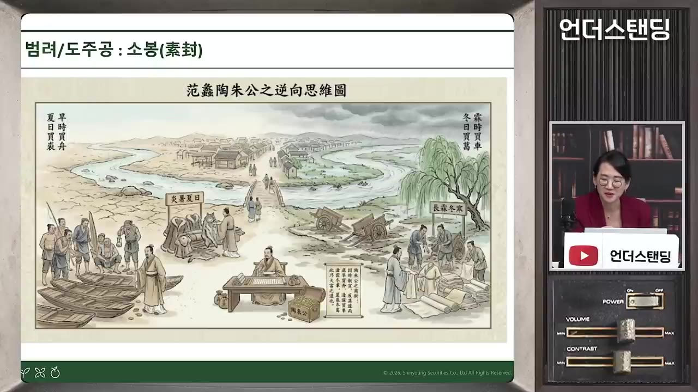
- 오초칠국의 난(기원전 154년경) 때 반란군 세력이 커서 아무도 돈을 빌려주지 않자 무염씨만 10배로 갚는 조건으로 빌려줬습니다. 반란이 빨리 진압되며 그는 10배를 벌었습니다(자막상 '며칠 만에'). 위기에 과감히 거는 판단의 사례입니다. (2:57:41)
따라 해보기
영상에 나온 켈리 공식, 현금 비중, 리밸런싱, 시세 거리 두기를 내 포트폴리오 규칙으로 옮기는 방법입니다.
준비물
- 증권 계좌, 현재 자산 목록(주식·현금 비중)
- 엑셀 또는 메모장. 비용은 없고 30분이면 됩니다.
단계별 방법
- 우위 확인
- 켈리 비율 계산
- 절반으로 줄이기
- 현금 비중 정하기
- 리밸런싱 규칙
- 시세 확인 줄이기
- 규칙 고정
- 1우위 확인
이 투자가 이길 확률이 50%를 넘는다고 볼 근거가 있는지 적습니다. 근거가 없으면 걸지 않습니다 (30:40)
- 2켈리 비율 계산
손익이 1:1이라면 '이길 확률 − 질 확률'로 걸 비율을 냅니다(아래 식)
- 3절반으로 줄이기
주식처럼 확률을 정확히 알 수 없는 시장에서는 소프처럼 계산값의 절반만 겁니다
- 4현금 비중 정하기
올인하지 않습니다. 섀넌의 도깨비 기본형은 현금 50 : 주식 50입니다
- 5리밸런싱 규칙
정해진 시점(영상 시뮬레이션은 월말)마다 비중이 처음 비율로 돌아가도록 오른 쪽을 팔고 내린 쪽을 삽니다
- 6시세 확인 줄이기
하루 한 번만 시세를 보고, 매매는 규칙에 따라서만 합니다
- 7규칙 고정
장세가 바뀌어도 규칙을 바꾸지 않습니다. 적립식 매수도 함께 쓸 수 있습니다
2단계 계산식
손익 1:1일 때: 걸 비율 = p − (1 − p) 예) p=0.6 → 0.2 (20%)
일반식(보충): 걸 비율 = p − (1 − p) / b b = 이겼을 때 받는 배수
하프 켈리: 위 값 × 0.5
따라 할 수 있는지 점검
- ✅ 바로 따라 할 수 있음: 4단계(현금 비중), 5단계(50:50 리밸런싱 계산), 6단계(하루 한 번 시세 확인), 7단계(규칙 고정).
- ⚠️ 1·2단계 「우위 확인」「켈리 비율 계산」: 주식 투자의 승률을 어떻게 추정하는지는 영상에 나오지 않습니다 → 승률을 알 수 없으면 켈리 비율보다 하프 켈리나 그 이하로 보수적으로 잡는다는 영상의 결론을 따릅니다.
- ⚠️ 2단계: 손익이 1:1이 아닐 때의 식은 영상에서 '승비는 무시한다'며 생략했습니다 → 위 일반식으로 보충합니다(보충).
- ⚠️ 5단계 「리밸런싱 규칙」: 주기(매월·분기)나 비중이 얼마나 어긋나면 조정할지 정하는 기준은 영상에서 정해 주지 않았습니다. 시뮬레이션은 월말 리밸런싱이었습니다(46:08) → 처음에는 월 1회로 시작합니다. 매매 수수료·세금은 따로 따져야 합니다(보충).
- ❓ 현금 25 : 주식 75처럼 주식 비중을 높인 리밸런싱은 박 이사가 "검증되지 않았다"고 했습니다. 상승장이 확실하면 바이앤홀드가 낫다는 말과 함께 보면 비율은 스스로 정해야 합니다.
확인 방법
- 리밸런싱 뒤 계좌의 현금 : 주식 비율이 정한 비율(예: 50:50)과 맞는지 봅니다.
- 한 달 동안 규칙 밖의 매매를 몇 번 했는지 세어 봅니다. 0번이 목표입니다.
막히면
- 떨어지면 무서워서 못 사고, 오르면 아까워서 못 파는 게 정상적인 반응입니다. 그래서 시세를 멀리하고 규칙대로만 움직입니다.
- 레버리지 ETF는 횡보장에서 원금을 녹이니 이 규칙에 쓰지 않습니다.
- 장세에 따라 규칙을 바꾸면 시장에 휘둘리는 것과 같습니다.
기억할 숫자·인용
- 35,500원: 박 이사가 2007년 9월 고점 부근에서 판 자사주 가격
- 승률 60% → 켈리 20%, 하프 켈리 10% / 승률 80% → 켈리 60%
- 1987년 블랙먼데이: 하루 약 23% 하락
- 섀넌·소프의 룰렛 장치: 8개월 개발, 카지노에서 3일 사용
- 1937년: 섀넌 석사 논문(정보를 0과 1로 표현) / 2001년 사망
- YCC: 단기 0.375%, 장기 2.5%, 단기채 80%를 연준이 매입 / 1946~48년 물가 18~20% 상승
- 1966년: 9개월 만에 다우지수 25% 하락 / 볼커 시절 기준금리 21%
- LTCM 레버리지 25~30배 → JWM 10~15배 → 2008년 44% 손실
- 「화식열전」은 『사기』 130권 중 129권
- "썰물이 되면 누가 벌거벗고 수영했는지 안다." (0:28, 누구의 말인지는 자막상 불분명)
- "중앙은행의 역할은 파티가 무르익기 전에 펀치볼을 치우는 것." (마틴 의장)
- "공짜 점심은 없다. 하지만 아주 싼 점심은 있다." (메리웨더)
- "쌀 때 사라. 오늘 못 사면 내일 사라. 내일도 못 사면 네 것이 아니다." (진행자가 소개한 문구)
생각해볼 점
- 켈리와 화식열전의 긴장: 앞의 두 강의는 "올인하지 말라"고 하고, 화식열전 강의는 "때가 오면 압도적으로 걸라"고 합니다. 박 이사도 크게 걸어야 할 때가 분명히 온다고 인정합니다. 내 생각에는 핵심 자산은 켈리식으로 지키고 일부만 기회에 거는 식으로 둘을 나눠 적용하는 방법을 고민해 볼 만합니다.
- 승률을 알 수 없는 문제: 켈리 공식은 확률을 알 때 쓰는 식입니다. 주식에서는 그 확률 자체가 추정이라 영상도 하프 켈리를 권합니다. 숫자보다 '과신하지 말라'는 태도로 받아들이는 편이 현실적입니다.
- 역사 일화 정확성(보충): 일부 설명은 일반적으로 알려진 사실과 다릅니다.
- 닉슨이 1960년 대선에서 진 상대는 존슨이 아니라 케네디로 알려져 있습니다. 번즈는 고향 친구라기보다 닉슨의 경제 고문 출신으로 알려져 있습니다.
- '매일 1%면 1년에 365%'는 단순 합산이고, 복리로 계산하면 훨씬 큽니다.
- 연준 의장 키 이야기는 농담 섞인 속설입니다. 일화는 교훈 위주로 받아들이는 게 좋습니다.
바로 해볼 일
- 지금 계좌의 현금 비중을 확인하고, '입장권' 현금이 0이 아닌지 점검하기
- 손실 났을 때 사는 규칙, 이익 났을 때 파는 규칙(또는 월말 리밸런싱 비율)을 한 줄로 적어 두기
- 이번 주는 시세를 하루 한 번만 보고, 그 밖의 시간에는 산책하기
노트 본문입니다. 영상 화면 캡처 줄은 14개를 넣었습니다(3시간 영상이라 상한인 14장). 순서가 있는 내용은 흐름 블록 4개로 썼습니다: 리밸런싱 예시, 금리의 역사, 부의 3단계, 따라 해보기 단계.
자막에서 잘못 받아쓴 것으로 보이는 이름 일부는 바로잡아 적었습니다. '무죄장력·기호쟁시'는 원문대로 '무재작력·기요쟁시'로, '법녀'는 '범려'로 썼습니다. 탁씨가 간 '총나라'와 '썰물' 인용의 화자는 확실하지 않아 "(자막상 불분명)"으로 남겼습니다. 영상 속 역사 일화 가운데 알려진 사실과 다른 부분(닉슨·번즈 관계 등)은 본문에서 고치지 않고 「생각해볼 점」에 "(보충)"으로 따로 적었습니다.